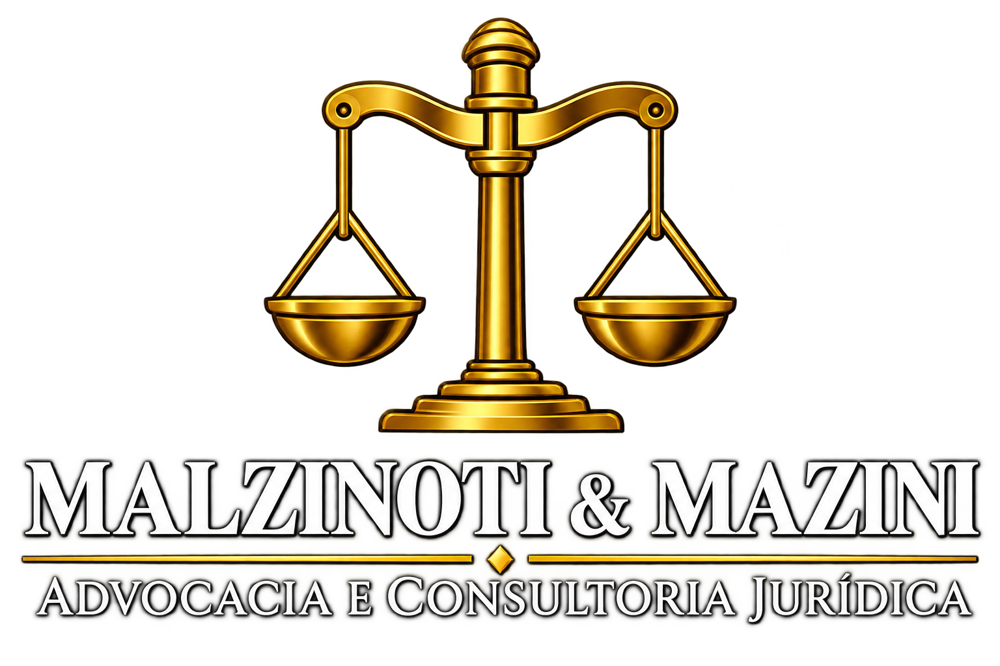

SOBRE NOSSO ESCRITÓRIO.
Oferecemos serviços jurídicos com ética, compromisso e profissionalismo, buscando soluções eficientes e personalizadas para cada cliente. Nosso objetivo é proteger seus direitos e garantir segurança jurídica em cada etapa do processo.
Direito Civil
Atuação na resolução de conflitos relacionados a contratos, indenizações, responsabilidade civil e direitos individuais. Buscamos soluções jurídicas eficientes para proteger os interesses de nossos clientes, oferecendo orientação especializada e acompanhamento em cada etapa do processo.
Direito Trabalhista
Assessoria jurídica em questões relacionadas às relações de trabalho, incluindo direitos trabalhistas, rescisões contratuais, verbas rescisórias e conflitos entre empregados e empregadores. Nosso compromisso é buscar soluções justas, sempre com responsabilidade, transparência e respeito à legislação vigente.
Direito Criminal
Defesa técnica e acompanhamento jurídico em investigações, processos criminais e demais questões relacionadas ao Direito Penal. Trabalhamos com seriedade, discrição e dedicação, garantindo atenção individualizada a cada caso e respeito aos direitos e garantias fundamentais.
CONTATOS
Fale conosco por meio das nossas
fontes de comunicação